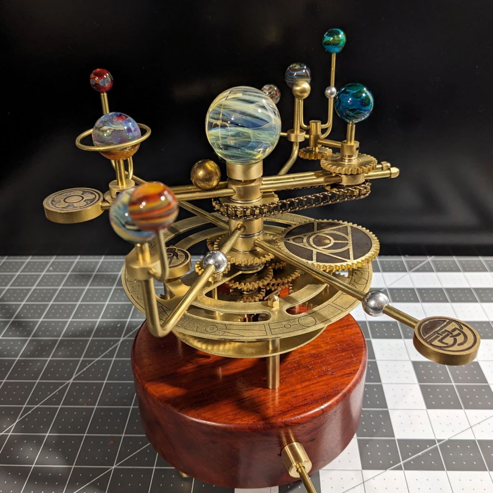

About the Orrery
This is an interactive 3D model of the solar system. Use your mouse to explore planets, asteroids, and other celestial objects.
An orrery is a mechanical model of the Solar System that illustrates or predicts the relative positions and motions of the planets and moons, usually according to the heliocentric model. It may also represent the relative sizes of these bodies; however, since accurate scaling is often not practical due to the actual large ratio differences, a scaled-down approximation may be used instead.
